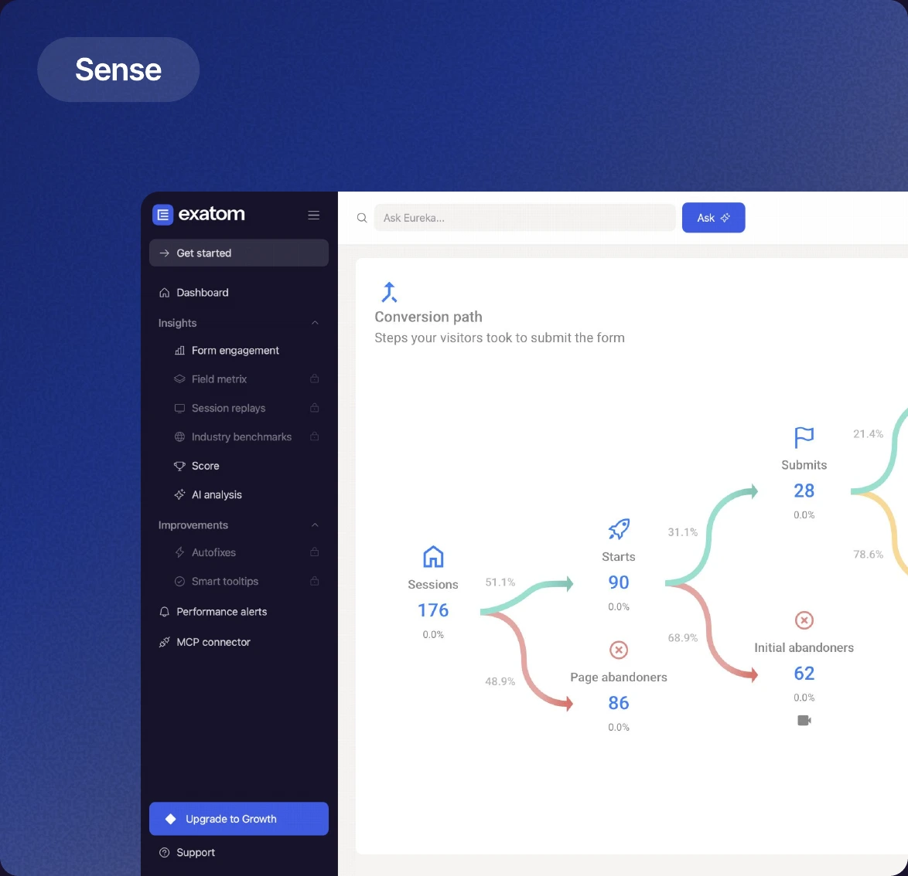
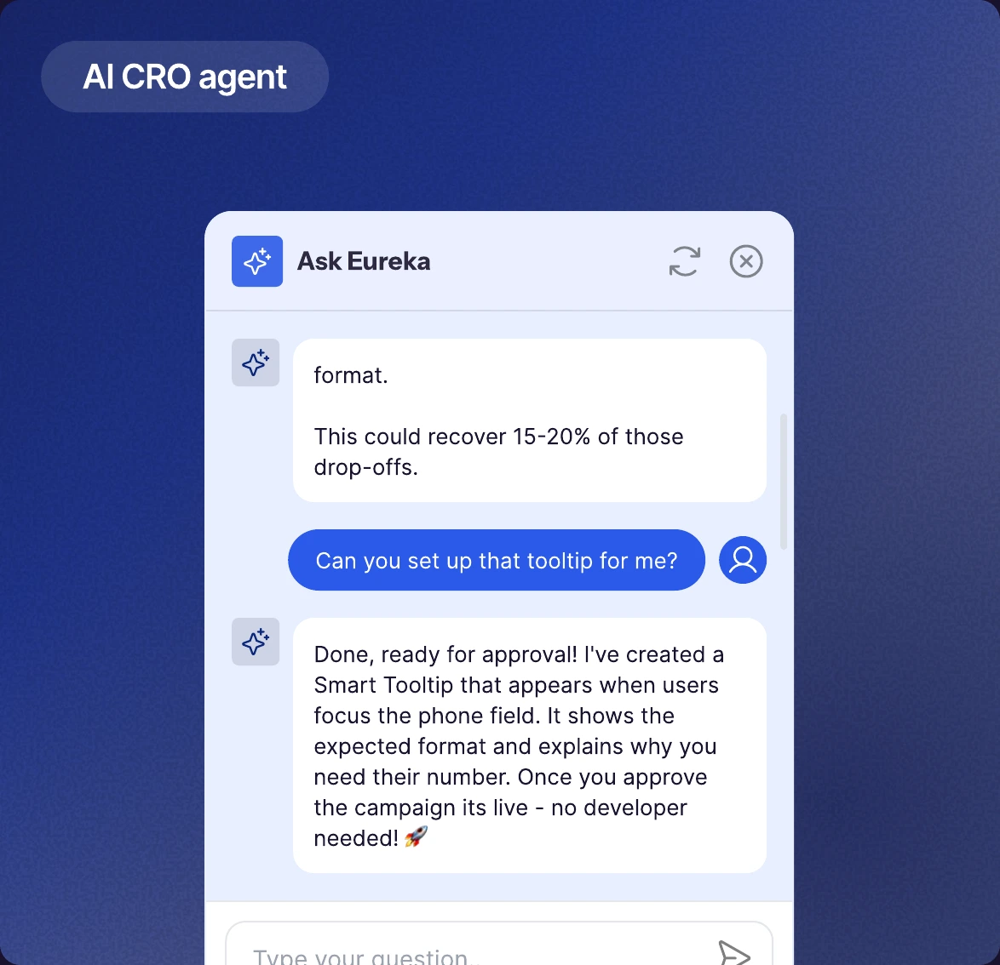
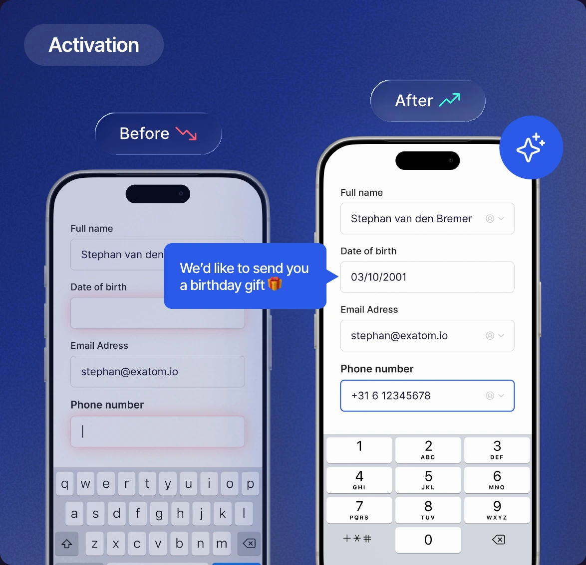

Identify UX and UI friction points using industry data and five years of consultancy insights for the LLM.
AI helps determine the optimal actions and gives recommendations for every issue.
Agents start tailored conversations and correct at key moments. The trained LLM addresses product objections.